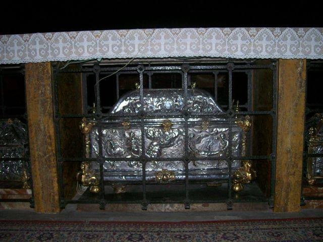

MOLON - Santa Eurósia, a Padroeira
A devoção a Santa Eurósia foi transplantada para o Brasil (via fotografia), pelos mais de 150 imigrantes que partiram do Castello de Arzignano no ano de 1882. No Brasil foi elaborada uma estátua em Otávio Rocha e ela irá também a Festa dos Molon em Farroupilha, no próximo final de semana.
Uma santa pouco conhecida no Brasil, é amplamente invocada na Europa, em especial nas regiões vinícolas, como protetora contra as intempéries. Trata-se de uma princesa, Eurósia, que ao se dirigir em direção à Espanha para casar com o futuro rei foi barbaramente martirizada por muçulmanos que estavam conquistando aquela região.
Conta a história que Orosia ou Eurósia nasceu no ano 864, em nobre família de Bohemia, da região da Europa Central. Seu primeiro nome foi Dobroslav, Perdeu ambos os pais, e foi criada por um duque e sua esposa Ludmilla, que a tratou como uma verdadeira filha e trabalhou para a difusão do cristianismo em toda a região. Assim Dobroslava, foi batizada e recebeu o nome grego de Eurósia, que significa “boa rosa”.
Em 880, Metódio foi a Roma e foi recebido pelo Papa João VII, e este o encarregou de encontrar uma noiva digna para o filho do conde espanhol de Aragon, Don Fortun Garces. O Papa apelou para a ajuda de Metódio, que apontou a jovem princesa Eurósia, e retornou a Bohemia. Eurósia, agora com dezesseis anos de idade, foi considerada uma boa candidata.
Iniciaram a viagem em direção à Espanha. Era o mês de agosto e a comitiva estava com pressa para atravessar os Pireneus antes de serem impedidos de qualquer ação ou morreram. A comitiva foi atacada pelos mouros, e foram todos mortes e também Eurósia sofreu terrível martírio, uma vez que não aceitou casar com um Mouro. Esse manda despedaçá-la, como os seus compatriotas. Eurósia não perde a alegria. Ofereceu ao verdugo seus braços, que caíram em seguida cortados na altura dos ombros. Logo, a espada cortaram suas pernas até os joelhos. E o rosto da mártir era cada vez mais encantador. Os quatro pedaços do corpo de Eurósia, cortados pela espada, pareciam rosas vermelhas.
Um anjo teria cantado: - ‘Vem, esposa predileta. Esta é a coroa que te prepara o Senhor. Teu nome invocado pelos fieis se tornará chuva. E será escudo contra as tempestades.Conta a tradição, que no momento do martírio, desencadeou uma chuva furiosa, um rugido assustador de água, relâmpagos, trovões ensurdecedores e ventos fortes. Os sarracenos fugiram de terror, enquanto uma voz mais forte da tempestade, disse: "Dou a você o poder de dominar as tempestades, sempre que seu nome for invocado."
Em Jaca, na Espanha, muitos anos depois, foram achados os restos mortais de Eurósia. Hoje, encontra-se o corpo de Santa Eurósia em uma urna de prata de baixo do altar principal, enquanto que a cabeça se encontra em uma capela no interior.
Na Igreja do Castello de Arzigango, na Itália a devoção de S.Eurósia, é muito forte. E os imigrantes que vierem ao Brasil, entre eles as famílias dos Ferrari, Galiotto, Fochezatto, Dani, Tadiello, Fracasso, Magnabosco, Zorzin, Verza, Molon e outras ... transportaram alma, costumes, gostos, saberes e fazeres, para a X Légua da Colônia Caxias, exatamente nos Travessões Marcolino Moura e Pinhal, pertencentes ao distrito de Otávio Rocha, em Flores da Cunha, no Rio Grande do Sul.
Inicialmente uma FOTO recordava a Santa das suas devoções, posteriormente foi mandado fazer uma estátua de S.Eurósia que se encontra na Igreja de Otávio Rocha.
Devoção rara, não se sabe que há alguma outra comunidade que tem essa Santa no Brasil. Eurósia é invocada contra as intempéries na região, dividindo as preces com Santa Bárbara.
Na origem dos imigrantes, Arzignano, um cartaz divulga a tradicional Festa de Santa Eurósia.
"Santa Eurósia reze por nós e nos proteja contra as intempéries. Amém."
|  | |||

|
{kind=link}
{kind=link}
{kind=link}
{kind=link}
{kind=link}